Atharv Ramesh
atharv.ramesh2003@gmail.com · a3nair@ucsd.edu
I am masters student at UC San Diego in the ECE Department specializing in Machine Learning and Data Science. I worked at
Netradyne as a Machine Learning Engineer, where I worked on edge ML systems for automotive applications. I completed my bachelor's degree at
Indian Institute of Technology Hyderabad in Electrical Engineering.
I just started grad school and am actively exploring research opportunities in LLMs and Computer Vision. I have recently started working on test time scaling of LLMs with process reward models.
I am also looking to work on SOTA computer vision research problems. I am also actively looking for MLE/Research Intern roles for Summer 2026 and beyond.
Resume ·
GitHub ·
LinkedIn ·
Projects
|
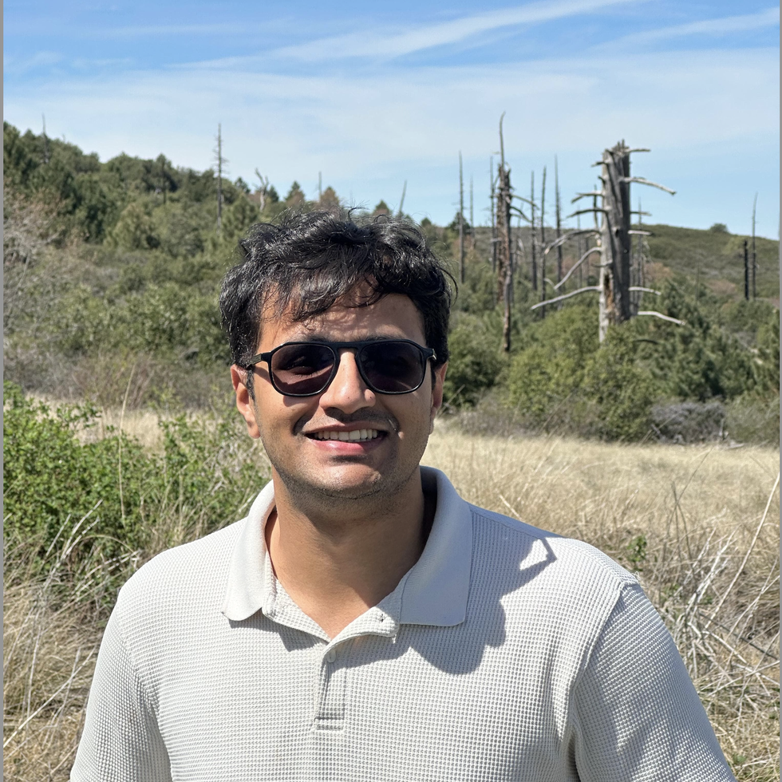
|
Recent Updates
| Sep 2025 |
Started my M.S. in Machine Learning and Data Science at UC San Diego (ECE). |
| Dec 2024 |
Published my first paper in Bioengineering. |
| June 2024 |
Graduated from IIT Hyderabad and starting as an Associate AI Engineer at Netradyne, Bengaluru, India. |
|
Netradyne
Software Engineer — Machine Learning · Jun 2024 – Aug 2025 · Bengaluru, India
- Re-architected the edge video stack with async scheduling and priority queues, delivering a 17% throughput gain with zero frame drops.
- Deployed passenger safety, unsecured package, and drowsiness models across Qualcomm SNPE and NVIDIA TensorRT platforms.
- Merged multi-service components into a multithreaded daemon, shaving 3% RAM and hardening cross-compilation and CI for fleet updates.
|
Silicon Labs
Software Engineer Intern · May 2023 – Jul 2023 · Hyderabad, India
- Implemented Minstrel adaptive rate control on RS9116 Wi-Fi modules, improving rate-vs-range behavior in live field tests.
- Worked across embedded C, Linux drivers, and IEEE 802.11 stack diagnostics for low-power IoT deployments.
|
Alog Tech
Robotics Software Developer · May 2023 – Jul 2023 · Hyderabad, India
- Built a fully autonomous indoor navigation stack with ROS Navigation, custom planners, and watchdog services.
- Integrated motor control interfaces and YOLO-based perception for reliable obstacle avoidance on mobile robots.
|
|
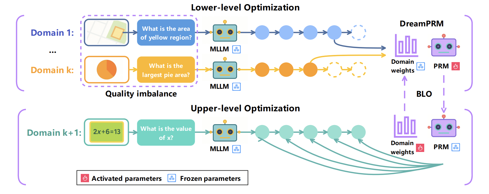
Image copyright: DreamPRM authors (source)
|
Test time Scaling for LLMs using Process Reward Models
GitHub [WIP]
Currently in progress: Working on adapting DreamPRM to Lean4 based Formal Theorem Proving.
I am finetuning working LLama-3.2 models to guide inference for models like Goedel-Prover-v2. This is my first time finetuning LLMs using Kubernetes clusters and multiple GPUs.
Also exploring inference libraries like VLLM for substantial speedups
|
|
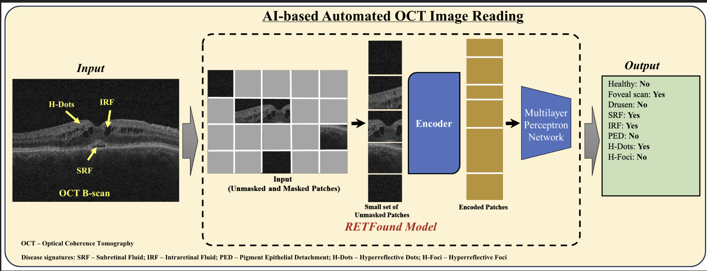
|
OCT Analysis with RETFound & Generative Augmentations
Biomedical vision · Generative modeling
Publication |
Code
Adapted RETFound self-supervised weights to noisy OCT scans (Acc 0.77 / AUC 0.80) and synthesized retinal data with Pix2Pix GAN + latent diffusion pipelines for robustness studies.
|
|
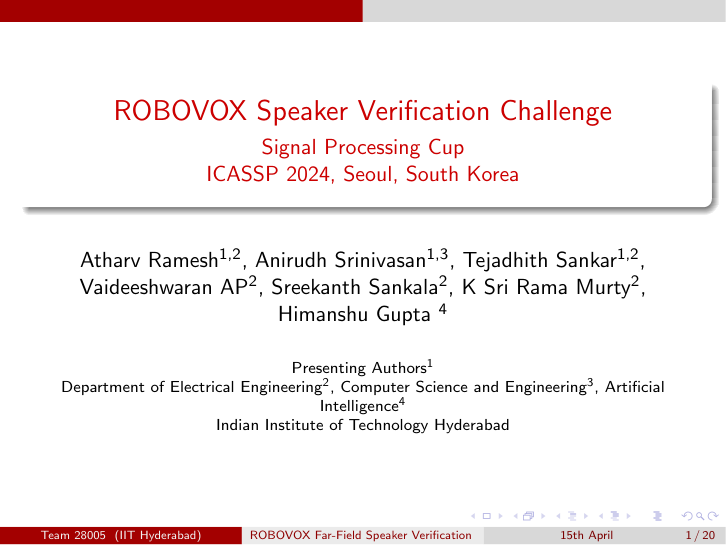
|
Far-Field Speaker Verification on Mobile Robots
IEEE SP Cup 2024 winners
GitHub
Optimized ERes2Net backbones on 3D-Speaker with RIR, MUSAN, and speed perturbations, delivering minDCF 0.67 and EER 8.93 with adaptive s-norm scoring for deployment.
|
|
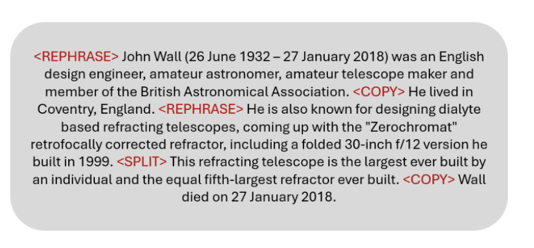
|
Document-Level Text Simplification
Two-stage plan-guided transformer
GitHub
Built a plan→generate pipeline where a RoBERTa classifier predicts edit operations that condition a two-stage transformer, achieving SOTA SARI 43.56 / D-SARI 38.52 on R-Wiki-auto.
|
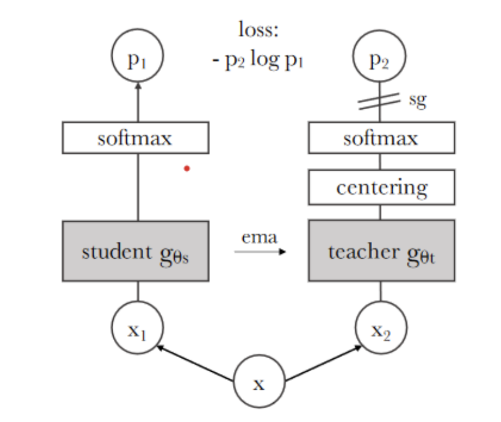
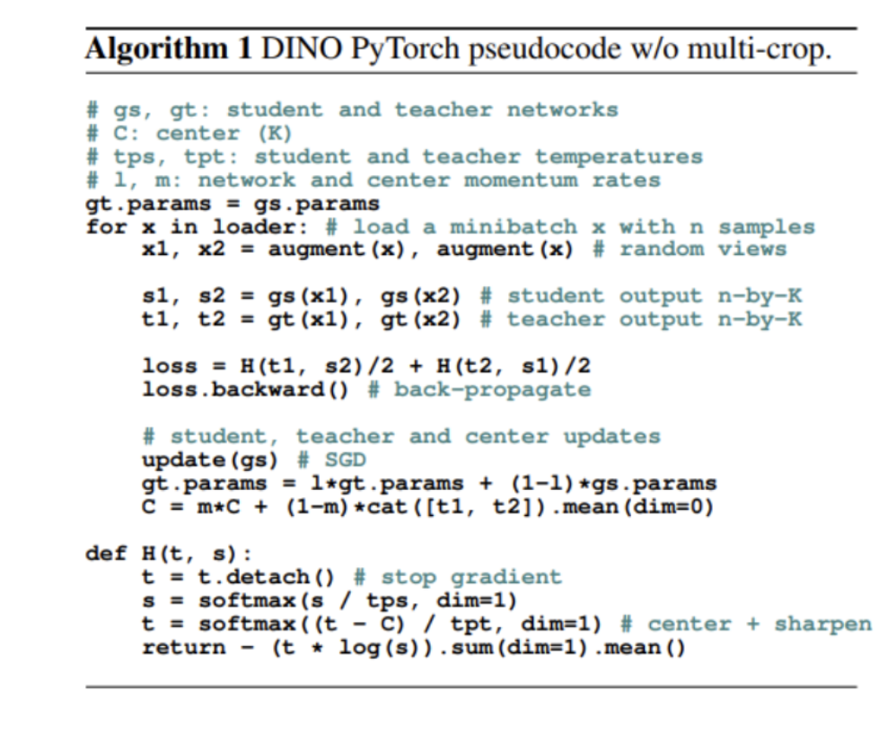
|
Exploring Self-Supervised Learning with DINO
Self-distillation · Representation learning
GitHub
Reproduced DINO training on Imagenette, benchmarking against supervised ResNet and ViT baselines. Delivered 12–20% gains, with downstream evaluations on CIFAR-10/100 and Pascal VOC segmentation.
|
|
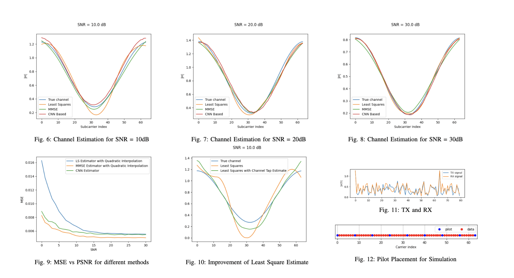
|
Deep Learning for OFDM Channel Estimation
Wireless communication · Model compression
GitHub
Simulated an end-to-end OFDM link with comb-type pilot insertion and benchmarked LS/MMSE estimators versus a compact CNN, matching MMSE accuracy with limited synthetic training data.
|
|
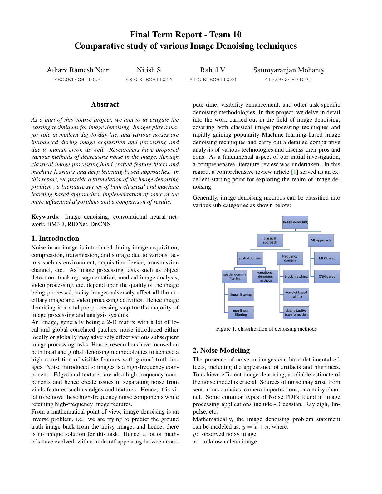
|
Comprehensive Review of Image Denoising
Classical + deep pipelines
GitHub
Surveyed and re-implemented classical methods (Wavelets, NLM, BM3D, WNNM) alongside modern DnCNN/RIDNet/CBDNet architectures, comparing PSNR/SSIM trade-offs and deployment considerations.
|
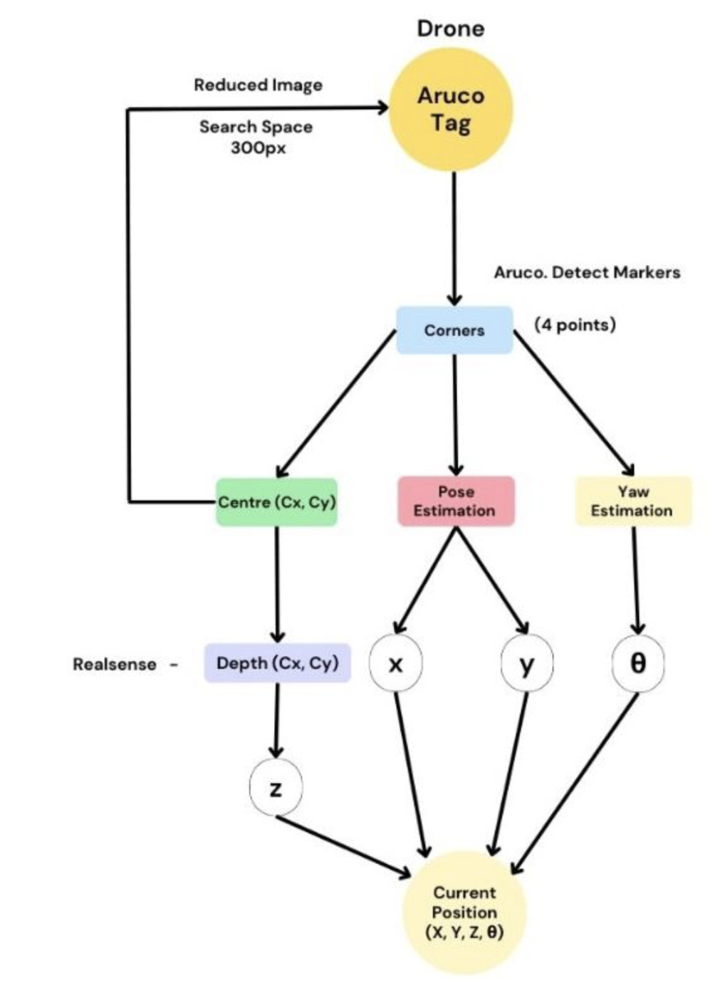
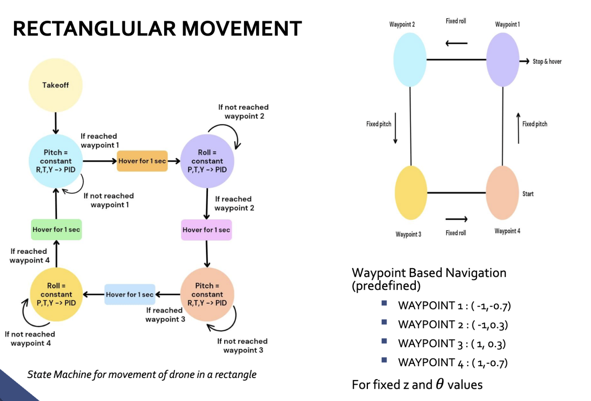
|
PID Control of Drone with Overhead Vision
Robotics club · Real-time control
GitHub
Built socket-based control for the Pluto 1.2 drone, with ArUco pose tracking and PID loops that stabilized autonomous flight during Inter IIT Tech Meet challenges.
|
Detection of Disease Features on Retinal OCT Scans Using RETFound.
K. Du, A. R. Nair, S. Shah, A. Gadari, S. C. Vupparaboina, J.-A. Sahel, et al.
Bioengineering, 2024.
DOI
|
|